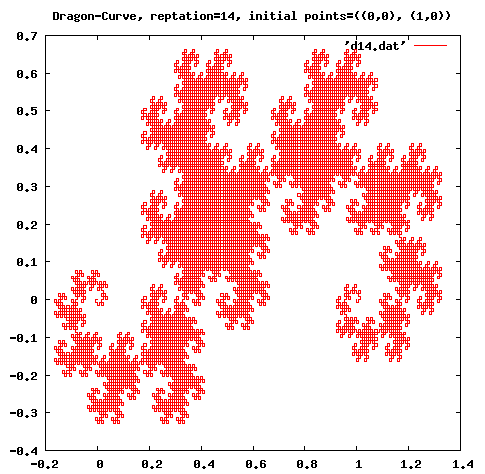
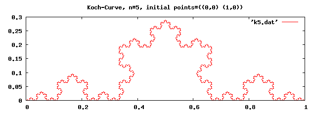

高阶函数
高阶函数
高阶函数 （Higher Order Function）是一种以 函数为参数的函数 。它们被用于 映射 、 过滤 、 归档 和 排序 表
高阶函数 提高了程序的模块性 。编写对各种情况都适用的高阶函数与为单一情况编写递归函数相比，可以使程序更具可读性。比如说，使用一个高阶函数来实现排序可以 使用不同的条件来排序 ，这就将 排序条件 和 排序过程 清楚地划分开来。函数sort具有两个参数，其一是 一个待排序的表 ，其二是 定序函数 。下面展示了按照大小将一个整数表 正序排序 ， <函数 就是 两数的定序函数 ：
(sort '(7883 9099 6729 2828 7754 4179 5340 2644 2958 2239) <) ;; (2239 2644 2828 2958 4179 5340 6729 7754 7883 9099)
按照 每个数末两位的大小排序 可以按下面的方式实现：
(sort '(7883 9099 6729 2828 7754 4179 5340 2644 2958 2239) (lambda (x y) (< (modulo x 100) (modulo y 100)))) ;; (2828 6729 2239 5340 2644 7754 2958 4179 7883 9099)
正如这里所演示的，像 快速排序 、 归并排序 等排序过程，如果把 定序函数 完全分离开来 提高了代码的复用性
由于 Scheme 并不区别过程和其它的数据结构 ，因此可以通过 将函数当作参数传递 ，轻松的定义自己的高阶函数
实际上，Scheme中预定义函数的本质就是高阶函数
因为Scheme并没有定义 块结构 的语法，因此使用 lambda表达式 作为一个块
映射
映射是将 同样的行为应用于表所有元素 的过程。R5RS定义了两个映射过程：
- map 过程： 返回转化后的表
- for-each 过程：注重 副作用
map
map 过程的格式如下：
(map procedure list1 list2 ...)
- procedure ：与某个 过程 或 lambda表达式 相绑定的符号
- 作为参数的 表的个数 视 procedure需要的参数 而定
; Adding each item of '(1 2 3) and '(4 5 6). (map + '(1 2 3) '(4 5 6)) ; (5 7 9) ; Squaring each item of '(1 2 3) (map (lambda (x) (* x x)) '(1 2 3)) ; (1 4 9)
for-each
for-each的格式与map一致。但for-each并 不返回一个具体的值 ，只是 用于副作用
(define sum 0) (for-each (lambda (x) (set! sum (+ sum x))) '(1 2 3 4)) sum ; 10
过滤
过滤函数并没有在 R5RS 中定义
但MIT-Scheme实现提供了 keep-matching-items 和 delete-matching-item 两个函数
(keep-matching-items '(1 2 -3 -4 5) positive?) ; (1 2 5)
归档
尽管在R5RS中没有定义归档函数
但MIT-Scheme提供了 reduce 等函数
(reduce + 0 '(1 2 3 4)) ; 10 (reduce + 0 '(1 2)) ; 3 (reduce + 0 '(1)) ; 1 (reduce + 0 '()) ; 0 (reduce + 0 '(foo)) ; foo (reduce list '() '(1 2 3 4)) ; (4 (3 (2 1)))
排序
尽管R5RS中没有定义 排序 函数
但MIT-Scheme提供了 sort（实为merge-sort实现）和 quick-sort 函数
(sort '(3 5 1 4 -1) <) ; (-1 1 3 4 5)
apply
apply 函数：将一个 过程 应用 于一个表_ 。此函数具有 任意多个参数 ：
- 首参数 ：应该是一个 过程
- 末参数 ：应该是一个 表
将表展开，作为过程的参数
虽然乍看之下不然，但这个函数的确非常方便
(apply max '(1 3 2)) ; 3 (apply + 1 2 '(3 4 5)) ; 15 (apply - 100 '(5 12 17)) ; 66
编写高阶函数
自己编写高阶函数非常容易
member-if 和 member
member-if 函数：
- 使用一个 谓词 和一个 表 作为参数
- 返回一个子表，该 子表的car部分 即是 原列表中 首个满足该谓词 的元素
member-if函数可以像下面这样定义：
(define (member-if proc ls) (cond ((null? ls) #f) ((proc (car ls)) ls) (else (member-if proc (cdr ls))))) (member-if positive? '(0 -1 -2 3 5 -7)) ; (3 5 -7)
member 函数 检查特定元素是否在表中 ，函数需要三个参数：
- 用于 比较的函数
- 特定项
- 待查找表
(define (member proc obj ls) (cond ((null? ls) #f) ((proc obj (car ls)) ls) (else (member proc obj (cdr ls))))) (member string=? "hello" '("hi" "guys" "bye" "hello" "see you")) ; ("hello" "see you")
不规则曲线
生成像 C曲线、龙曲线 等不规则曲线可以通过在 两个点中插入一个点 来实现
先定义一系列的辅助函数：
;;; 平面直角坐标系上的点通过序对来表示，其中car部分和cdr部分分别代表 ;;; x坐标和y坐标。 ;;; 函数_x和_y用来取得坐标，point用来建立一个点 (define _x car) (define _y cdr) (define point cons) ;;; 接受两个表作为参数，将第一个表反转后与第二个表连接起来。 (define (rappend ls0 ls1) (let loop((ls0 ls0) (ls1 ls1)) (if (null? ls0) ls1 (loop (cdr ls0) (cons (car ls0) ls1))))) ;; (rappend '(1 2 3) '(4 5 6)) -> (3 2 1 4 5 6) ;;; (devide p1 p2 r) ;;; dividing p1 and p2 internally by the ratio r (define (divide p1 p2 r) (point (+ (* r (_x p1)) (* (- 1.0 r) (_x p2))) (+ (* r (_y p1)) (* (- 1.0 r) (_y p2))))) ;;; 将点输出至文件。将一系列点points按一行一个点得格式输出至fout代表的文件 (define (print-curve points fout) (with-output-to-file fout (lambda () (for-each (lambda (p) (display (_x p)) (display " ") (display (_y p)) (newline)) points))))
frac 函数：
;;; (fractal proc n points fout) ;;; 创建分型图形的高阶函数。其中，proc是定位函数，n是重复次数 ;;; points是初始点构成的表，fout是输出文件的文件名 (define (fractal proc n points fout) (let loop((i 0) (points points)) ;; loop对数据表做n次插入 (if (= n i) (print-curve points fout) (loop (1+ i) (let iter ((points points) (acc '())) ;; iter 调用 proc 函数把点加入一个列表 (if (null? (cdr points)) (reverse! (cons (car points) acc)) (iter (cdr points) (rappend (proc (first points) (second points)) acc))))))) ;; proc 函数有2个参数，两个点，返回第一个点和插入点的列表 'done)
定义各种曲线：
;;; c curve (define (c-curve p1 p2) (let ((p3 (divide p1 p2 0.5))) (list p1 (point (+ (_x p3) (- (_y p3) (_y p2))) (+ (_y p3) (- (_x p2) (_x p3)))))))
;;; dragon curve (define dragon-curve (let ((n 0)) (lambda (p1 p2) (let ((op (if (even? n) + -)) (p3 (divide p1 p2 0.5))) (set! n (1+ n)) (list p1 (point (op (_x p3) (- (_y p3) (_y p2))) (op (_y p3) (- (_x p2) (_x p3)))))))))
;;; koch curve (define (koch p1 p2) (let ((p3 (divide p1 p2 2/3)) (p4 (divide p1 p2 1/3)) (p5 (divide p1 p2 0.5)) (c (/ (sqrt 3) 2))) (list p1 p3 (point (- (_x p5) (* c (- (_y p4) (_y p3)))) (+ (_y p5) (* c (- (_x p4) (_x p3))))) p4)))
测试：
(compile-file "frac.scm") (load "frac") ;; C-Curve (fractal c-curve 14 '((0 . 0) (2 . 3)) "c14.dat") ;; Dragon-Curve (fractal dragon-curve 14 '((0 . 0) (1 . 0)) "d14.dat") ;; Koch-Curve (fractal koch 5 '((0 . 0) (1 . 0)) "k5.dat")
计算后的 X坐标 和 Y坐标 都存储在名字形如 *.dat 的文件中。现在可以使用你喜欢的制图程序来绘制。下面的图都是用 gnuplot 绘制的


